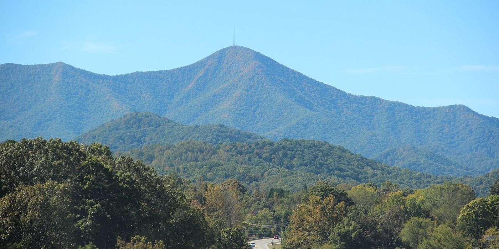
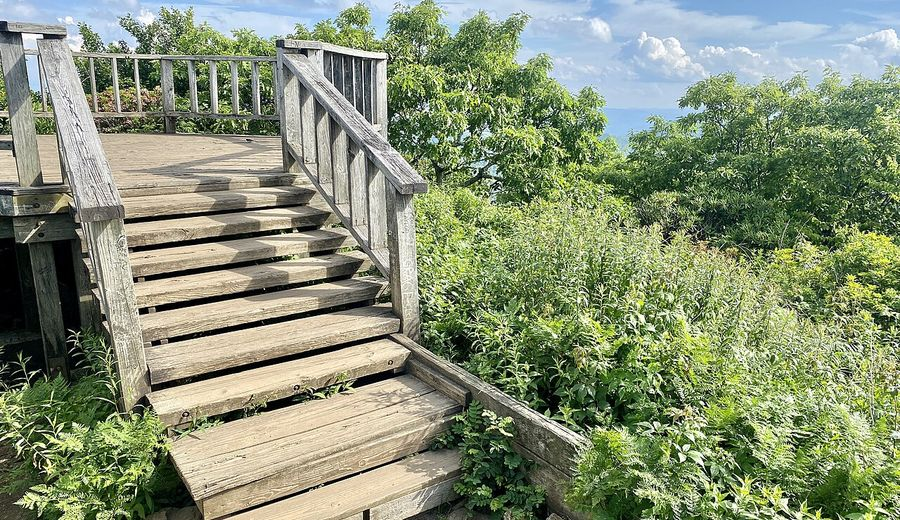
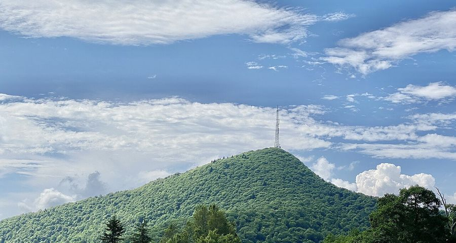
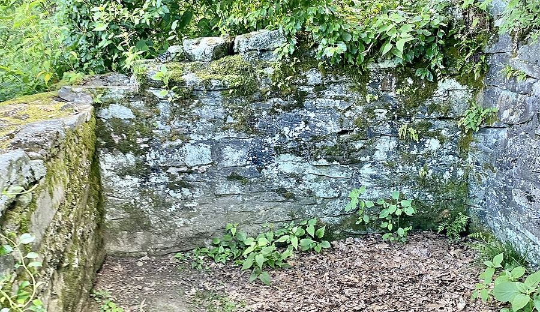
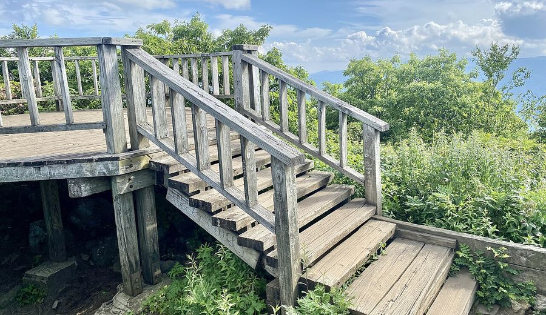
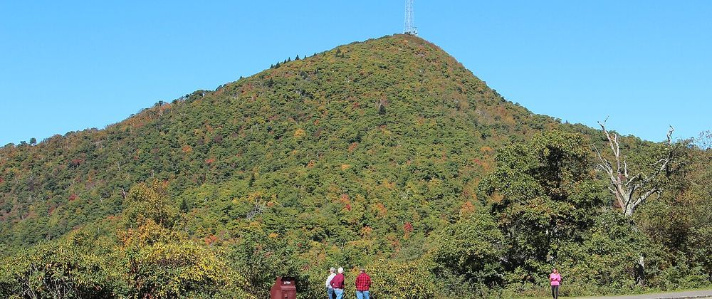

Two nights under the stars at Mount Pisgah. One headlamp hike to the observation deck. Watch the Blue Ridge light up at sunrise from 5,721 ft.
Martin and Eli (14) roll in on the Rivian R1T Dual Large with rooftop tent, camp high on the Parkway, then hike from camp to the Mount Pisgah observation deck as the sky turns gold.


This is a real mountain weekend, not a hotel trip. Friday you leave Mebane, pick up Eli in Greensboro, charge in Asheville, then climb the Blue Ridge Parkway to Mount Pisgah Campground site B26. Two nights in the rooftop tent. Sunday before dawn, headlamps on, hike from camp through Buck Spring / MST, hit the Mount Pisgah Trail, and stand on the observation deck as the sun clears the ridges. One outing. Truck stays parked. Then pack, roll home.
| Rule | How it plays |
|---|---|
| Hike from camp | Leave from the pad. No drive camp → trailhead. Truck stays put. |
| One hike | Single outing to the Pisgah observation deck and back. Side-spur OK. |
| Sunrise on summit | On the deck for ~7:27 AM EDT. |
| Drive | Mebane → Greensboro → I-40 W → Asheville RAN → BRP → camp (~4.5–5 hr). |

Recreation.gov facility 234182 on the Blue Ridge Parkway at MP ~408.8. Check-in Friday 2026-10-02, checkout Sunday 2026-10-04 after the sunrise hike. Two nights: Fri night + Sat night.
Drive-up pads fit the R1T and rooftop tent. No hookups. Watch limb clearance. Food goes in bear boxes or a locked vehicle. Showers in Loops B and C. Flush toilets, potable water, and a seasonal dump station on site. NPS overview: Spend the night at Mount Pisgah Campground.
Booked on Recreation.gov. Loop B sits closer to showers. Pad fits the R1T and rooftop tent.


The prize is the Mount Pisgah observation deck at 5,721 ft, with the big broadcast tower right there. From camp, follow the connector / Inn corridor, take the optional Buck Spring Trail (MST side-spur), reach the Mount Pisgah parking corridor, then climb the Mount Pisgah Trail (~1.6 mi / ~712 ft with a steep rocky finish) to the deck.
Expect ~5–6+ mi round trip from camp. Leave camp ~5:00–5:30 AM EDT with headlamps. The NPS trailhead at MP 407.6 is a reference only; the truck does not move from camp. Buck Spring Lodge foundation and gap overlooks make solid side-spur stops on the way up.
Sun times use the Asheville-area table for 2026-10-04. Confirm BRP road status morning-of: Parkway closures.

Depart Mebane near full SOC, pick up Eli in Greensboro, run I-40 west, charge at the Rivian Adventure Network Asheville before the Parkway, then BRP south to Mount Pisgah. Arrive before dark, set up on B26, sleep in the RTT.
Camp day at nearly 5,000 ft. Easy walks around the loops, overlooks, and recovery before the early Sunday start. Second night in the rooftop tent.
Pre-dawn hike from camp to the deck for sunrise, return to the truck, pack, and checkout. Top SOC if needed, then I-40 east with a Greensboro drop and home to Mebane.
Mount Pisgah camping weekend 2026-10-02 to 2026-10-04 · site B26 · Martin + Eli.
Updated 2026-09-09.
Photos: Wikimedia Commons · Mt-Pisgah-Fall.jpg; Mount Pisgah from NC 151, Oct 2016; Observation Platform Mount Pisgah (Blue Ridge Parkway); Buck Spring Lodge Ruins; Mount Pisgah BRP views; Mount Pisgah (North Carolina) Oct 2016. Freely usable (CC0 / CC licenses on Commons). Hosted with the trip page on GitHub Pages.